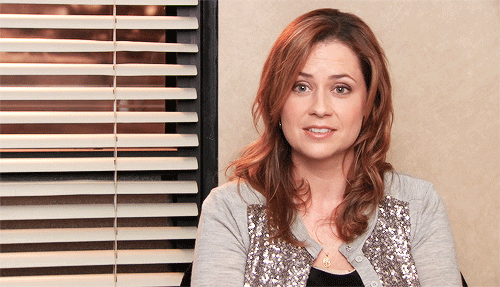
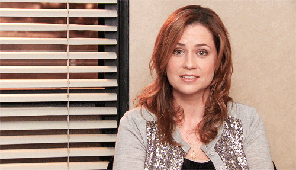
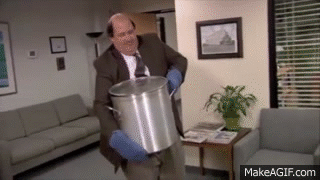
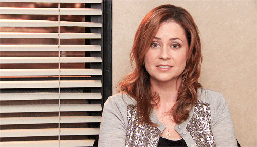
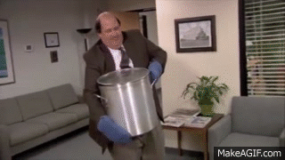
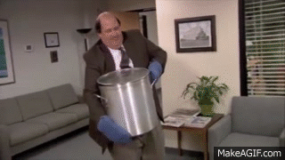
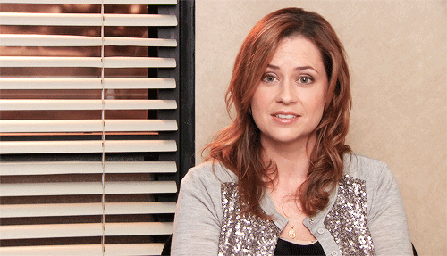
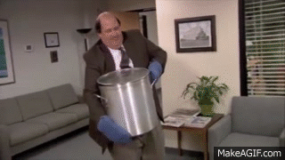

 





El gerente de Dunder Mifflin, Michael Scott, es uno de los personajes más memorables de la serie. Caracterizado por su buen humor y actitud ante las fallidas situaciones que atraviesa la compañía, Michael intenta constantemente encontrar un vínculo de amistad con sus empleados, a quienes hace participar en un corto protagonizados por él mismo: “Threat Level: Midnight”.
Sobresaliente vendedor en Dunder Mifflin, Jim recorre la serie entre su trabajo en Scranton, y su breve transferencia a Stanford. Inteligente y aficionado a los deportes, Jim emplea mucho de su tiempo en Scranton jugándole bromas a su compañero de escritorio, Dwight Schrute. A través de las temporadas, vemos el desarrollo profesional y personal de Jim, tanto en el comienzo de sus propios emprendimientos, como en el crecimiento de su relación con Pam Beesly, la recepcionista de la oficina.
Uno de los mejores vendedores de Dunder Mifflin, Dwight es también asistente del Gerente Regional (Michael). Caracterizado por su falta de sentido común y habilidades sociales, posee una gran cantidad de hobbies, relacionados a las artes marciales, defensa personal, el sistema judicial y su granja familiar. Dentro de Dunder Mifflin, ocupa gran parte de su atención en su enemistad con su compañero de trabajo, Jim Halpert.
Inicialmente recepcionista de la compañía, Pam reparte su tiempo en Dunder Mifflin entre sus aspiraciones de artista, su deseo de formar parte del departamento de ventas, y su relación con sus compañeros, especialmente Jim. Este personaje se caracteriza por su lealtad y bondad, al punto de seguir a su gerente, Michael Scott, en varias de sus aventuras y poco sostenibles emprendimientos.
Aficionado a los crucigramas y las siestas, serio, trabajador y, por sobre todo, gruñón, Stanley ha pasado la mayor parte de su vida en la oficina y, junto con su actitud resignada, compone algunos de los momentos más hilarantes de la serie.
Kevin forma parte del sector de contabilidad, aunque sus capacidades intelectuales no lo justifiquen del todo. Con un gran gusto por la música, Kevin es el baterista de “ScrantonCity” . Con sus constantes actitudes de torpeza e ingenuidad, este personaje aporta una cuota de humor considerable para la serie.